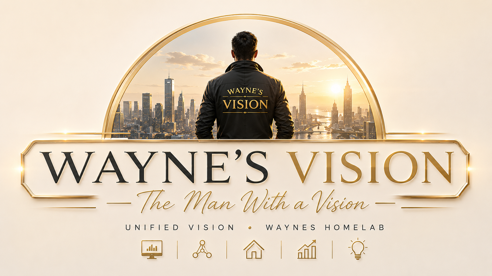

👁️
Visibility first
The system starts by showing what is happening: energy, network, service health, alerts and smart-home readiness.
Monitoring
Dashboards

A modern home lab operator platform designed to make infrastructure, monitoring, automation and smart-home systems easier to see, understand and improve.
Unified Vision is the management philosophy behind Waynes Homelab. The goal is to bring visibility, automation, recovery and future controls into one calm, beautiful and understandable system.
The system starts by showing what is happening: energy, network, service health, alerts and smart-home readiness.
Every part has a purpose. Data becomes insight before any automation or control is added.
New tools can be added, replaced or improved because the system is organized in clear layers.
Like a human body, the platform has senses, memory, eyes, nerves, warning signals and a face for the operator.
Energy meters, smart plugs, network devices and services provide the raw signals.
InfluxDB stores measurements over time, so the system can learn from history.
Grafana turns data into trends, charts and analysis.
Uptime Kuma watches services and devices like an immune system.
Luxafor gives a physical green, yellow or red status at a glance.
Node-RED connects the pieces and exposes simple APIs for the future dashboard.
Home Assistant will provide home state, smart devices and future safe controls.
The iPad dashboard and mobile cockpit turn the system into something easy to use.
GitHub and recovery kits preserve the system and make it safer to improve.
The platform can grow with a public digital book, a polished iPad interface, Home Assistant entity states, safe controls, multilingual documentation and future smart-home automation.